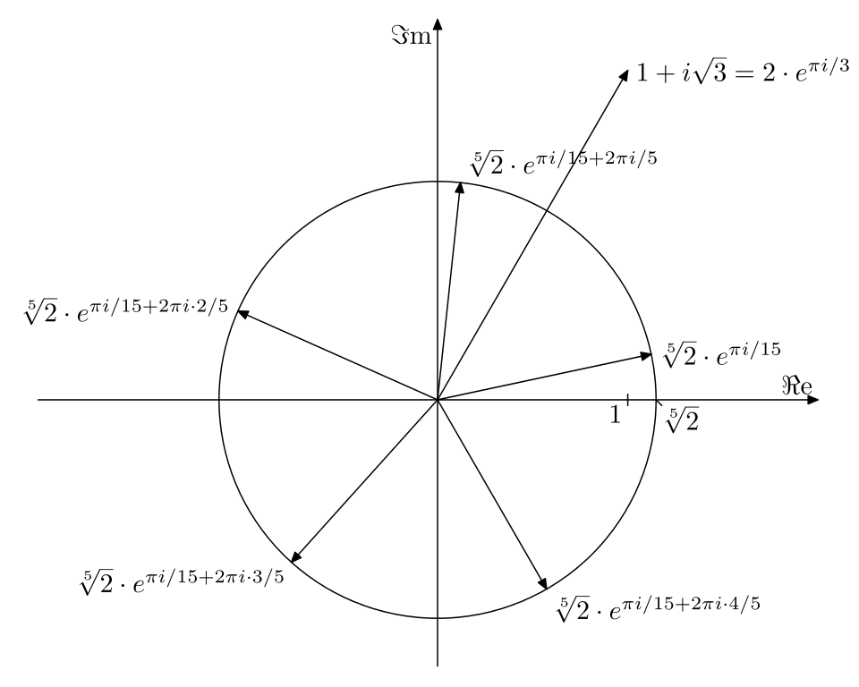

Complex Analysis
Some basic stuff
Inverse of a complex number
Exercise. An explicit formula for the inverse of a complex number $z = x + iy$ is $$\frac{1}{z} = \frac{x}{x^2 + y^2} - \frac{iy}{x^2 + y^2}.$$
De Moivre's formula
Theorem. For any integer $n$ and any real number $\th,$ $$e^{i n \th} = (\cos \th + i \sin \th)^n = \cos n\th + i \sin n\th.$$
Algebraically we're raising $e^{i\th}$ to the $n$-th power and geometrically it's rotating $e^{i\th}$ by theta $n$ times.
Cauchy Schwarz inequality
Theorem. For any complex numbers $a_i, b_i,$ $$\left|\ \sum_{i=1}^n a_i \bar{b_i}\ \right|^2 \leq \sum_{i=1}^n |a_i|^2 \sum_{i=1}^n |b_i|^2.$$

Letting $a = (a_i), b = (b_i),$ we can write (taking square root of both sides) $$|\ < a, b \>| \leq |a||b|.$$
Triangle inequality
Theorem. For any complex vector $a = (a_i), b = (b_i) \in \CC^n,$ $$|a + b| = \left( \sum_{i=1}^n |a_i + b_i|^2 \right)^{1/2} \leq \left( \sum_{i=1}^n |a_i|^2 \right)^{1/2} + \left( \sum_{i=1}^n |b_i|^2 \right)^{1/2} = |a| + |b|.$$
Roots of complex numbers
Theorem. Let $w = |w|(\cos \psi + i \sin \psi).$ Then the $n$-th roots of $w$ are $$z_k = |w|^{1/n}(\cos \th_k + i \sin \th_k),$$ where $$\th_k = \frac{\psi}{n} + \frac{2\pi k}{n}, \quad\text{for}\quad k = 0,\ldots,n-1.$$

Two ways to represent a circle using complex numbers
One way to represent a circle is as the set of points $z$ s.t. $$|z - z_0| = r.$$ Another way is:
Proposition. Let $p$ and $q$ be distinct complex numbers, and $\r$ be any positive real number not equal to 1. Then the set of points $z$ s.t. $$|z - p| = \r |z - q|$$ is a circle.
Ellipses, Parabolas, and Hyperbolas
Exercise. Let $ p\in R_+ $ and let $ \G $ be the locus of points z satisfying $ |z - p| = cx, z = x + iy. $ Then $ \G $ is an ellipse if $ 0 < c < 1, $ a parabola if $ c = 1, $ and a hyperbola if $1 < c < \infty.$
Exercise. Let $\a$ be a complex number with $0 < |\a| < 1.$ Then
the set of all $z$ with
Triangle Inequality
Exercise. Let $z$ and $w$ be nonzero complex numbers. Then $|z+w| = |z| + |w|$ iff $z = sw$ for some positive real number $s.$
Odd roots of a negative real number
Exercise. Suppose that $n$ is an odd integer and $w$ is a negative real number. Then one solution of the equation $z^n = w$ is a negative real number. (E.g. $-2$ is a root of $z^3 = 8.$)
Exercise. Let $C$ be a circle and let A and B be any two points on C. If P is selected on the smaller arc of C joining A and B, then the angle from the line AP to the line PB is independent of the choice of P. (Recall that this angle is $\pi / 2$ if A and B are on opposite ends of a diameter.) The result remains true if "smaller" is replaced by "larger".
Inversion
Exercise. Let $L$ be the line $y = a, a > 0.$ Show that the locus of points $1/z, z\in L$ is the circle of radius $1/2a$ centered at $-i/2a.$
Proof. Let $w = 1/z$ where $z = x + ia \in L.$ We want to show that $w$ satisfies $|w + i/2a| = 1/2a.$ Write \begin{align*} \left|\frac{1}{z} + \frac{i}{2a}\right| &= \frac{1}{2a} \\ \left|\frac{2a + iz}{2az}\right| &= \frac{1}{2a} \\ |2a + iz| &= |z| \\ |2a + i(x + ia)| &= |z| \\ |ix + a| &= |z| \\ |i(x - ia)| &= |z| \\ |i \bar z| &= |z|, \end{align*} which is true.
Exercise. Let L be a line through the origin. Then the locus of points $1/z, z\in L$ is a line through the origin. The two lines have equal slopes except for a minus sign.
Exercise. Let C be the circle $|z - c| = r, 0 < r < c.$ Show that the locus of points $1/z, z\in C$ is the circle centered at $\frac{c}{c^2 - r^2}$ of radius $\frac{r}{c^2 - r^2}.$
Exercise. Let C be the circle $|z - r| = r, r > 0.$ Show that the locus of points $1/z, z\in C$ is the vertical line through $1/2r.$
Subsets of the Plane
Reference
- Complex Variables by Fisher.
- Complex Analysis by Stein & Shakarchi.
- Visual Complex Analysis by Needham.